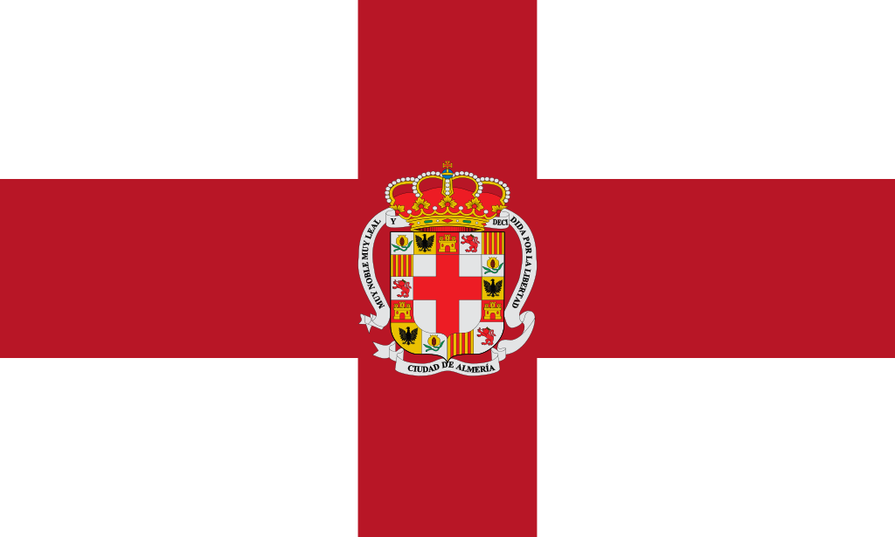
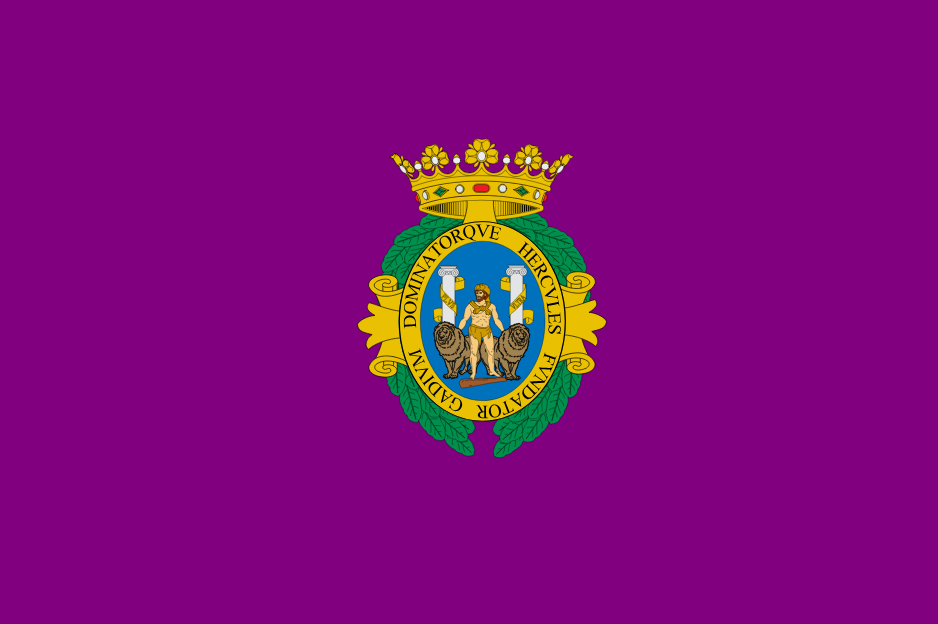
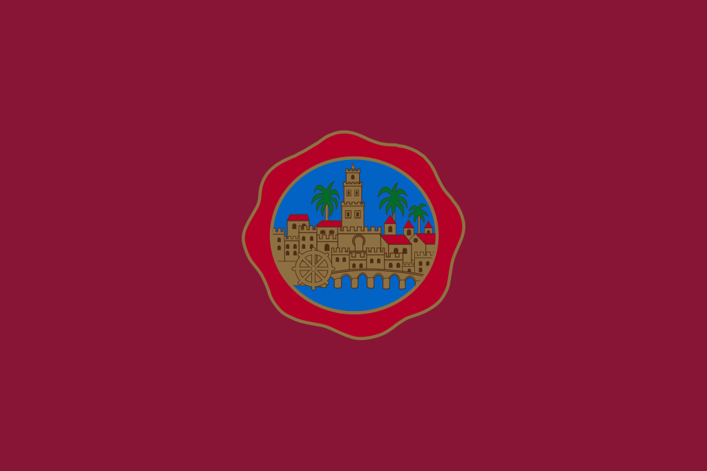
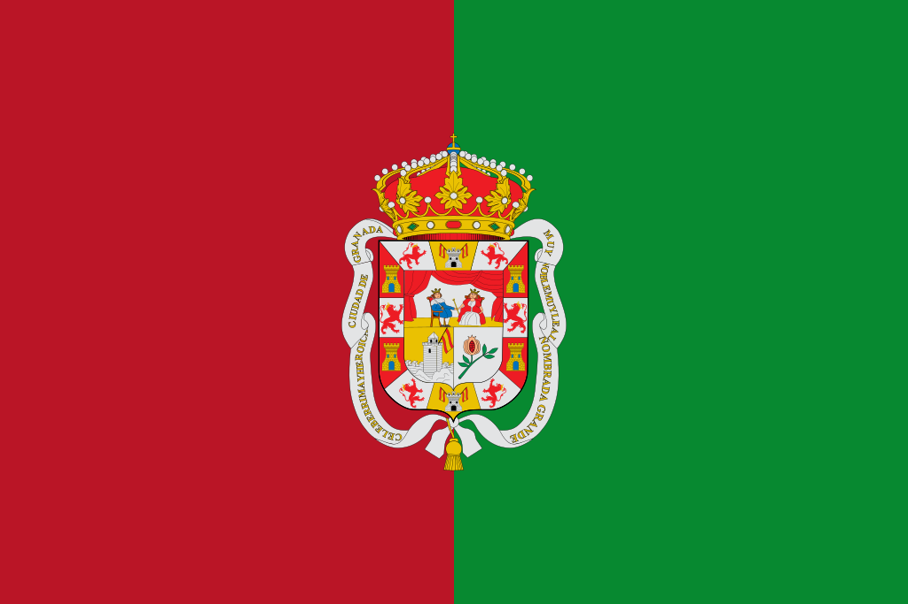
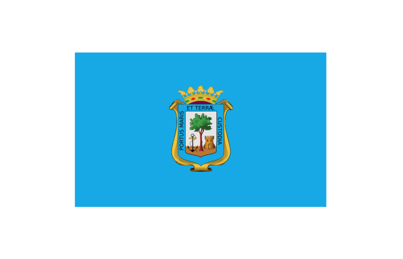
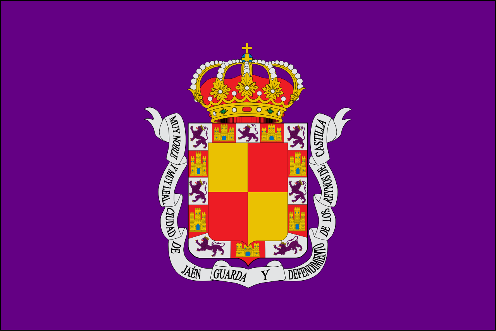
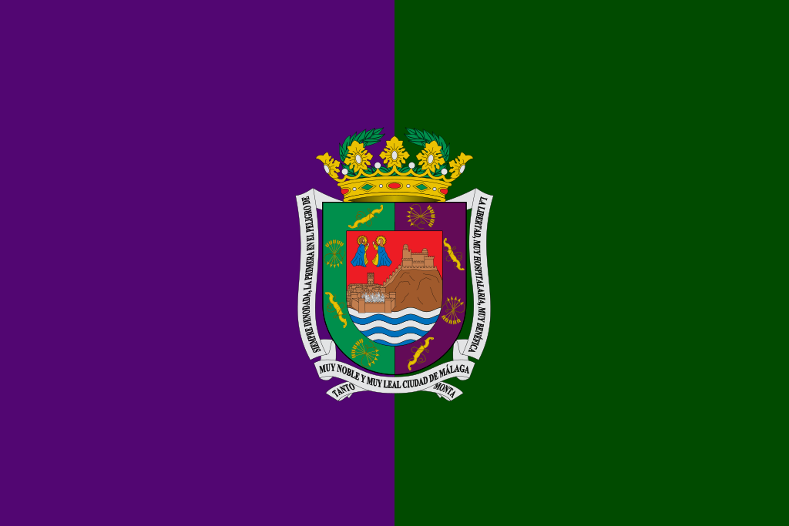
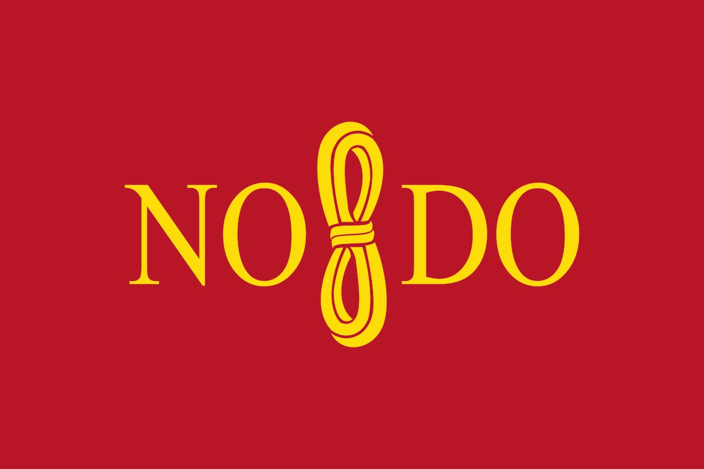

Almería.
Almería es un municipio y ciudad de España, capital de la provincia homónima, en la comunidad autónoma de Andalucía. Es el centro neurálgico de la Comarca Metropolitana de Almería, en el extremo sureste de la península ibérica y de la comarca turística de Almería-Cabo de Gata-Níjar. La rodean por el oeste la sierra de Gádor, por el norte Sierra Alhamilla y por el este el valle y delta del río Andarax y, más allá, una llanura que culmina en la sierra de Cabo de Gata. Al sur, su puerto y litoral se abren a una amplia bahía sobre el mar Mediterráneo.
Cádiz
Cádiz es una ciudad y municipio de España, capital de la provincia homónima, en la comunidad autónoma de Andalucía. Con 116 979 habitantes empadronados en 2018 (INE), es la ciudad más poblada de la bahía de Cádiz y la tercera de la provincia tras Jerez de la Frontera y Algeciras.
Situada al sur de la península ibérica, en el extremo suroccidental de la Europa continental, conforma junto con los municipios de Chiclana, El Puerto de Santa María, Jerez, Puerto Real, Rota y San Fernando la llamada Mancomunidad de Municipios Bahía de Cádiz.
Córdoba
Córdoba es una ciudad y municipio español en Andalucía, capital de la provincia homónima, situada en una depresión a orillas del Guadalquivir y al pie de Sierra Morena.
Con 325.916 habitantes en 2018, es la tercera ciudad más grande y poblada de Andalucía tras Sevilla y Málaga, y la 12ª de España. Su área metropolitana comprende ocho municipios, con una población de 363.326 habitantes, la 23ª más poblada de España.
Granada
Granada es una ciudad y municipio español, capital de la provincia homónima, en la comunidad autónoma de Andalucía. Está situada en el centro de la comarca Vega de Granada, a una altitud de 680 m s. n. m., en una amplia depresión intrabética formada por el río Genil y por el piedemonte del macizo más alto de la península ibérica, Sierra Nevada, que condiciona su clima.
La ciudad es sede del Tribunal Superior de Justicia de Andalucía, Ceuta y Melilla, máximo órgano del poder judicial en la comunidad autónoma, del Consejo Consultivo de Andalucía y de la Archidiócesis de Granada. Alberga otras instituciones autonómicas de índole cultural o científica como el Centro de Documentación Musical de Andalucía, la Biblioteca de Andalucía, el Instituto de Astrofísica de Andalucía, el Instituto Andaluz de Geofísica y Prevención de Desastres Sísmicos, el Instituto de Academias de Andalucía, el Centro de Estudios Escénicos de Andalucía, el Consejo Escolar de Andalucía o el Colegio Notarial de Andalucía. Asimismo, es sede del Mando de Adiestramiento y Doctrina del Ejército de Tierra de las Fuerzas Armadas Españolas.
Huelva
Huelva es una ciudad y municipio español, capital de la provincia homónima, situada en la comunidad autónoma de Andalucía. Se encuentra en la denominada «Tierra llana», en la confluencia de los ríos Tinto y Odiel, en las llamadas Ría del Tinto y Ría del Odiel y según datos del INE poseía a 1 de enero de 2017 una población de 145 115 habitantes, y algo más de 240 000 incluyendo su área metropolitana. Es capital de provincia desde 1833 con rango de ciudad desde 1876.
La ciudad ha sido punto de encuentro de diferentes culturas y civilizaciones. En 2006, en una zona próxima al Colegio Diocesano, se encontraron restos datados entre el 3000 y el 2500 a. C., muy anteriores a Tartessos, además de descubrirse también restos de una ballena prehistórica en pleno centro de la ciudad. El hallazgo de dos depósitos cilíndricos, con alrededor de unas treinta piezas de deidades prehistóricas, la mayor conocida hasta el momento, situarían en la capital onubense «la ciudad más antigua de la península ibérica» y «la ciudad más antigua de la Europa Occidental».0 Pese a todo, los historiadores coinciden en señalar el año 1000 a. C. como el de la fundación del núcleo urbano por los fenicios con el nombre de Onuba Aestuaria, en la parte baja de la actual ciudad y situada extramuros de un enclave tartesio que ocupaba la actual parte alta.
Jaén
Jaén es una ciudad y municipio español de la comunidad autónoma de Andalucía, capital de la provincia homónima. Ostenta el título de «Muy Noble y Muy Leal Ciudad de Jaén, Guarda y Defendimiento de los Reinos de Castilla» y es conocida como la «capital del Santo Reino». Cuenta en 2018 con una población de 113 522 habitantes según el INE, 54 948 hombres y 59 290 mujeres, lo que supone aproximadamente una sexta parte de la población de toda la provincia. La ciudad se enmarca dentro del área metropolitana de Jaén de la que es cabecera, y absorbe un tercio de la población total de la provincia de Jaén. Su superficie es de 424,30 km².
Se alza al pie del cerro de Santa Catalina, con calles empinadas y de pronunciadas pendientes que definen su urbanismo, ensanchándose hacia las zonas más llanas y amplias de los nuevos barrios y bulevares. En sus alrededores abundan fértiles tierras de cultivo, y extensos olivares que cubren gran parte de su término. Hacia el sur y el sureste se encuentran las sierras de Jaén y Jabalcuz, y al norte se abre el llano del río Guadalbullón, que pasa a muy corta distancia de la ciudad.
Málaga
Málaga es una ciudad y un municipio de España, capital de la provincia homónima y ubicada en la comunidad autónoma de Andalucía.
Con una población de 571 026 habitantes en 2018, Málaga es la sexta ciudad más poblada de España, la segunda de Andalucía y la número cuarenta y seis de la Unión Europea, así como la mayor de entre las que no son capitales autonómicas. Del mismo modo, es la ciudad costera más grande y poblada del sur de España.
Sevilla
Sevilla es un municipio y una ciudad de España, capital de la provincia homónima y de la comunidad autónoma de Andalucía.5 Cuenta con 689 434 habitantes en 2017, por lo que es la ciudad más poblada de Andalucía, la cuarta de España después de Madrid, Barcelona y Valencia y la 32.ª de la Unión Europea. El municipio tiene una extensión de 140,8 km². El área metropolitana de Sevilla está compuesta por 46 municipios, incluye a una población de 1 535 379 habitantes (INE, 2016), y ocupa una superficie de 4905,04 km².
Su casco antiguo es el más extenso de España y uno de los tres más grandes de toda Europa junto a los de Venecia y Génova, con 3,94 kilómetros cuadrados, y su casco histórico uno de los más grandes de España (nótese la diferencia entre casco antiguo, que solo incluye la zona histórica anterior a la Revolución Industrial, y casco histórico, que abarca estadios posteriores). Su patrimonio histórico y monumental y sus diversos espacios escénicos y culturales la constituyen en ciudad receptora de turismo nacional e internacional, en efecto se trata de la tercera capital más visitada de España, tras Barcelona y Madrid. Entre sus monumentos más representativos se encuentran la catedral (que incluye la Giralda), el Alcázar, el Archivo de Indias y la Torre del Oro, de los que los tres primeros han sido declarados Patrimonio de la Humanidad por la Unesco de forma conjunta en 1987.